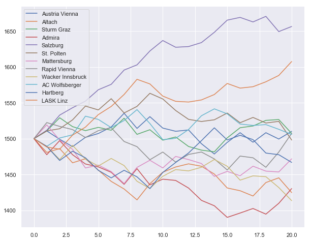

ELO estimate for football
Contents
ELO estimate for football¶
import numpy as np
import copy
import scipy as sp
import csv
import matplotlib.pyplot as plt
import seaborn as sns
import operator
sns.set()
# Import past results
past_results = []
with open('AUT.csv') as csvfile:
readCSV = csv.reader(csvfile, delimiter=',')
numGames = 0
for row in readCSV:
if row[2]=="2018/2019":
past_results.append({"ht": row[5], "at": row[6], "hg": int(row[7]), "ag": int(row[8]), "round": numGames//6})
numGames += 1
numRounds=numGames//6
# Future matches
remaining_matches = [('LASK Linz','Wacker Innsbruck'),
('Salzburg',"Sturm Graz"),
('Austria Vienna',"Altach"),
('Mattersburg','Rapid Vienna'),
("Admira",'St. Polten'),
('Hartberg','AC Wolfsberger'),
("Sturm Graz","Austria Vienna"),
("Rapid Vienna","Hartberg"),
("St. Polten","Mattersburg"),
("Wacker Innsbruck","Salzburg"),
("Altach","LASK Linz"),
("AC Wolfsberger","Admira")]
# Extract a list of teams
teams = []
for result in past_results:
if result['ht'] not in teams:
teams.append(result['ht'])
# Compute current standings
points = {}
goals_scored = {}
goals_conceded = {}
goals = {}
for team in teams:
points[team] = 0
goals[team] = 0
goals_scored[team] = 0
goals_conceded[team] = 0
for result in past_results:
goals_scored[result["ht"]] += result["hg"]
goals_conceded[result["ht"]] += result["ag"]
goals_scored[result["at"]] += result["ag"]
goals_conceded[result["at"]] += result["hg"]
goals[result["at"]] += result["ag"] - result["hg"]
points[result["ht"]] += 3 if result["hg"]>result["ag"] else 0 if result["hg"]<result["ag"] else 1
points[result["at"]] += 0 if result["hg"]>result["ag"] else 3 if result["hg"]<result["ag"] else 1
for team in teams:
goals[team] = goals_scored[team] - goals_conceded[team]
class eloPredictor():
def __init__(self,
homefield_adv=100,
weight=lambda nRound:20,
expected_result=lambda DeltaH: 1/(10**(-DeltaH/400)+1),
probs_from_E=lambda E: [1-E-np.exp(-(E-.5)**2/2/.28**2)/3/2,np.exp(-(E-.5)**2/2/.28**2)/3,E-np.exp(-(E-.5)**2/2/.28**2)/3/2]):
self.score_rate = {}
self.concede_rate = {}
self.probs_from_E = probs_from_E
self.weight = weight
self.elo = {}
self.homefield_adv = homefield_adv
self.__expected_result__ = expected_result
# Compute elo from past results
for team in teams:
self.elo[team] = [1500]
self.score_rate[team] = goals_scored[team]/numRounds
self.concede_rate[team] = goals_conceded[team]/numRounds
for result in past_results:
G = (abs(result["hg"]-result["ag"])+11)/8
W = 1 if result["hg"]>result["ag"] else 0 if result["hg"]<result["ag"] else .5
Wh = self.expected_result(result["ht"],result["at"])
Wa = 1 - Wh
self.elo[result["ht"]].append(self.elo[result["ht"]][-1]+self.weight(result["round"])*G*(W-Wh))
self.elo[result["at"]].append(self.elo[result["at"]][-1]+self.weight(result["round"])*G*(1-W-Wa))
# compute adjusted elo diff with homefield advantage
def elo_diff(self,teamH,teamA):
return self.elo[teamH][-1] - self.elo[teamA][-1] + self.homefield_adv
# compute expected result using supplied formula
def expected_result(self,teamA,teamB):
return self.__expected_result__(self.elo_diff(teamA,teamB))
# compute winning probabilities from expected result and supplied formula
def probabilities(self,teamA,teamB):
E = self.expected_result(teamA,teamB)
return self.probs_from_E(E)
pD = self.pDraw(E)
pW = E - pD/2
pL = 1 - pD - pW
return[pL,pD,pW]
# plot elo development
def plot_elo_history(self):
plt.figure(num=None, figsize=(10, 8), facecolor='w', edgecolor='k')
for team, elos in self.elo.items():
plt.plot(elos,label=team)
plt.legend()
plt.show()
# compute probability of advancing to the next round from sampling
def advProb(self,nSample=1000):
self.points_after = copy.copy(points)
self.match_results = {}
for match in remaining_matches:
self.match_results[match] = np.random.choice([0,1,3], nSample, p=self.probabilities(match[0],match[1]))
match_resultsA = copy.copy(self.match_results[match])
match_resultsA[match_resultsA == 3] = -1
match_resultsA[match_resultsA == 0] = 3
match_resultsA[match_resultsA == -1] = 0
self.points_after[match[0]] += self.match_results[match]
self.points_after[match[1]] += match_resultsA
# Count number of samples where each team is in the top six
# Rule for equal points: sort teams by goals from past games
self.numTopSix = {team: 0 for team in teams}
for k in range(nSample):
points_temp = {team: [self.points_after[team][k],goals[team]] for team in teams}
for team in sorted(points_temp, key=points_temp.get, reverse=True)[:6]:
self.numTopSix[team] += 1
orderedTeams = sorted(self.numTopSix, key=lambda x: self.numTopSix[x],reverse=True)
return {team: self.numTopSix[team]/nSample for team in orderedTeams}
def advProbPois(self,nSample=1000):
self.points_after = copy.copy(points)
self.goals = copy.copy(goals)
self.match_results = {}
for match in remaining_matches:
goalsA = np.random.poisson(lam=(self.score_rate[match[0]]+self.concede_rate[match[1]])/2,size=nSample)
goalsB = np.random.poisson(lam=(self.score_rate[match[1]]+self.concede_rate[match[0]])/2,size=nSample)
self.goals[match[0]] += goalsA
self.goals[match[1]] += goalsB
self.points_after[match[0]] += np.array([3 if gA>gB else 0 if gA<gB else 1 for (gA,gB) in zip(goalsA.tolist(),goalsB.tolist())])
self.points_after[match[1]] += np.array([0 if gA>gB else 3 if gA<gB else 1 for (gA,gB) in zip(goalsA.tolist(),goalsB.tolist())])
self.numTopSix = {team: 0 for team in teams}
for k in range(nSample):
points_temp = {team: [self.points_after[team][k],self.goals[team][k]] for team in teams}
for team in sorted(points_temp, key=points_temp.get, reverse=True)[:6]:
self.numTopSix[team] += 1
orderedTeams = sorted(self.numTopSix, key=lambda x: self.numTopSix[x],reverse=True)
return {team: self.numTopSix[team]/nSample for team in orderedTeams}
# plot advancing probabilities
def plot_adv_prob(self,nSample=1000,method="elo"):
if method=="elo":
probs=self.advProb(nSample=nSample)
else:
probs=self.advProbPois(nSample=nSample)
plt.figure(num=None, figsize=(10, 8), facecolor='w', edgecolor='k')
plt.xticks(rotation='vertical')
plt.bar(probs.keys(),probs.values())
for i in range(12):
plt.text(x = i-.72 , y = list(probs.values())[i]+.01, s = "{:10.3f}".format(list(probs.values())[i]), size = 12,color="red")
plt.show()
ELO history¶
With default parameters
eloPredictor().plot_elo_history()

Without homefield advantage
eloPredictor(homefield_adv=0).plot_elo_history()
Double weight for the last five rounds
eloPredictor(weight=lambda round: 60 if round > 15 else 20).plot_elo_history()

Prediction from ELO rating¶
Default parameters
eloPredictor().plot_adv_prob(nSample=50000)

Assuming that in the remaining matches draw/win/loss are equally likely
eloPredictor(probs_from_E=lambda E: [1-E,0,E]).plot_adv_prob(nSample=10000)
Assuming that the last five rounds carry a bigger weight. This changes the ELO development (see above)
eloPredictor(weight=lambda round: 60 if round > 14 else 20).plot_adv_prob(nSample=50000)

Poisson sampling¶
eloPredictor().plot_adv_prob(nSample=100000,method="Pois")